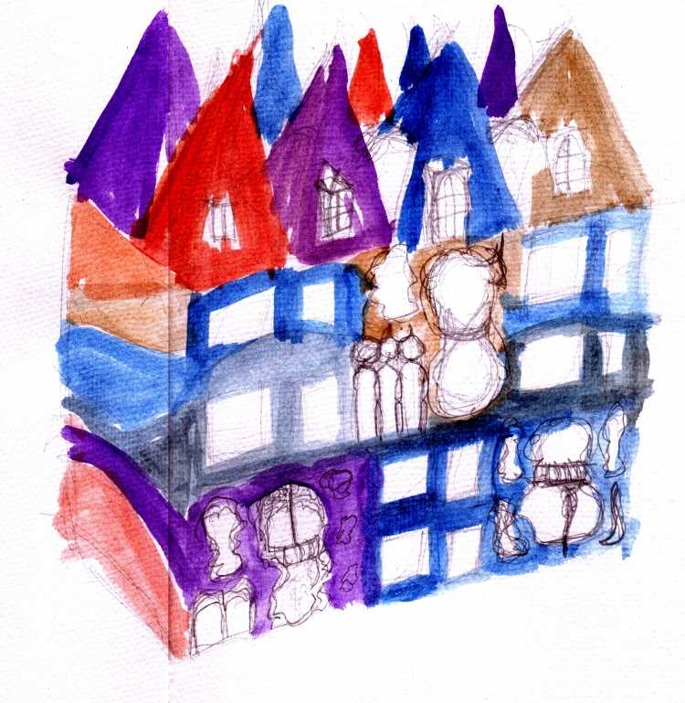
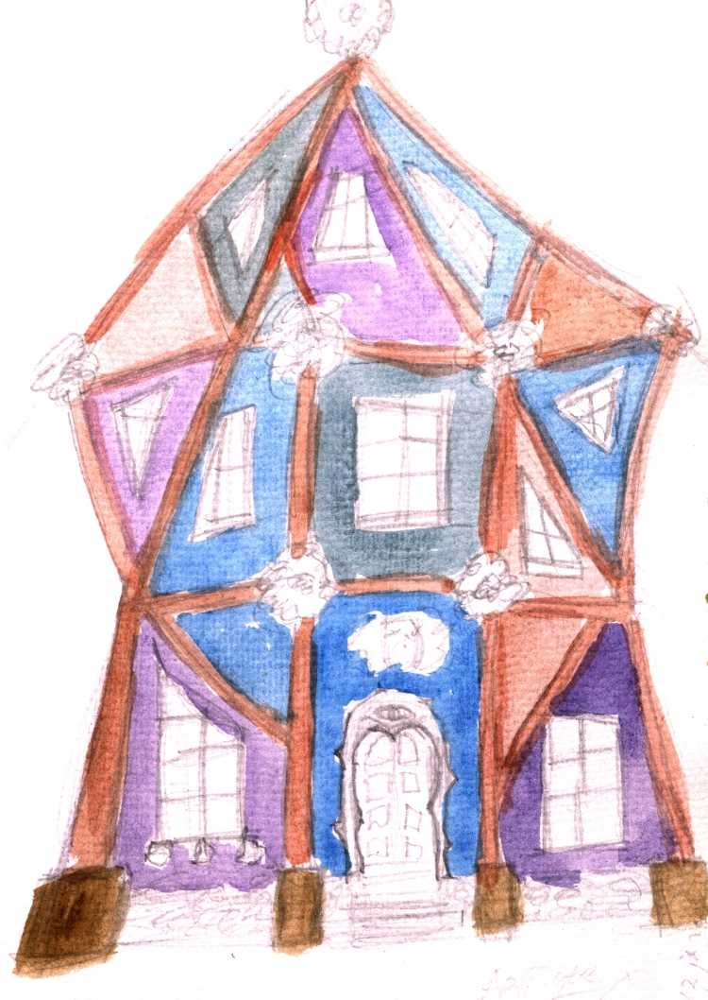
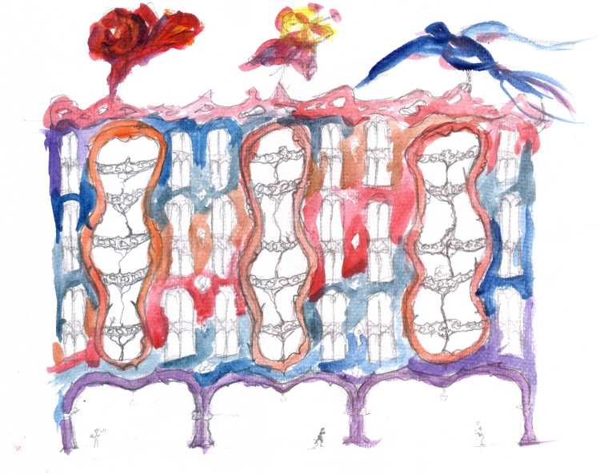
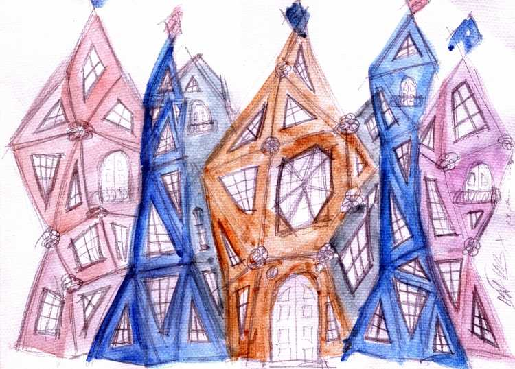
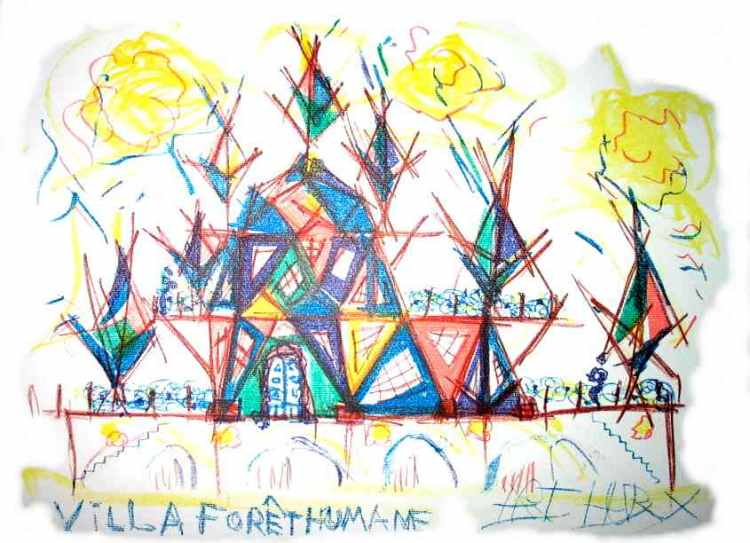

Venetian Renovation
A social building block,Topped up with pyramidical cones,
Interconnected with curved glass roofs.
The squared windows below indicate the old style.
Two floors are merged into one apartment.
New facade has free style windows and balcony.

Maison Forêt Humane
A city villa made of raw wooden beams,connecting in a triangular frame work.
Decorations at the crossings and lining of windows and doors.

Hotel Lips
At street level there are shops with a internal second floor,lined by arcs of natural stone.
Above the middle of each half sunken arch, the facade is ripped open
for the balconies that come pushing out, wubbling and undulating,
encadrés by lips of slightly orange marble.

Hotel Reve Sautant
It´s a framework of large timber beams.Connected at the ends to form irregular triangles projecting both inwards and outwards.
Each beam is decorated with geometric wood carvings
and a sculpture on every sixth beam depicting wild animals like Dolphins, Tigers, Elephants and Women and Man and parts of those.
The wall between the beams and the windows is colored stucco on isolating straw to make it all ecological.

Villa Forêt Humane
As a commissioned lithograph directly drawn on the stone, it representsa two story villa build on a large arcaded cellar (carparking).
The veranda, which surrounds it, has a great view all around.
It's decorated with wild spires as well on the terrasses and balconies as at the roof.
Some of the spires can function as tea-rooms or separete rooms for teenagers.
The framework is of large timbers organized in triangular shapes.
A possible location is in Narbonne, France,
with a view from a hill-side location over the valley
to the old cathedral and center.
| Consulting Architects: | ||
| Paul Rutjes | MSc | Technical University Delft |
| Francois Verhoef | MSc | Technical University Delft |
| Consulting Structural Designer: | ||
| Eef Siemelink | MSc | Technical University Delft |